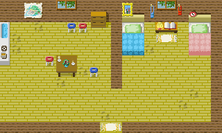
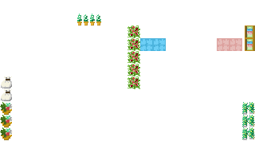

画面にマップを表示するにはマップデータが必要で、マップデータを作るためのエディタープログラムを作る事もあります。
テキストエディターで"人間側が理解しやすい"マップデータを作っておいて、コンバータープログラムで"プログラム側が理解しやすい"マップデータに変換する方法もあります。
どんなゲームでもマップを表示するゲームは、何かしらのエディターでマップを作ります。
画像は、今回作成したマップエディターの画面です。
マップエディターは、Javaを使って作ってあり、プログラムソースを、GitHubに置いています。
ScenarioEditor
本来は、マップを最初から作るようなエディターを作るべきなのですが、2000年頃にC++を使って作成した、マップエディターによる作成済みのマップがあります。
なので、ここでの「マップエディター」は、古いマップを新しい形式に変換するプログラムなのです。
古いマップエディターはダサすぎます。それに、使い方を忘れてしまって正しく画面が出ません。
マップ上の壁や木などの通過できない場所に印をつけておいて、プログラムで判定する必要があります。
今回作成したマップエディターでは、その印を数字で表示しています。
マップの指定場所に到着したら、イベントを発生させるという印も必要です。赤い字で表示しています。
シナリオランチャーは、あらかじめ画像編集ソフトで作っておいたブロック画像を、一つずつ置いていく「ブロック型」のマップ構成を採用しています。
大抵は、デザイナーさんに画像を作ってもらいます。
マップ画像は、背景画像と前景画像に分けて保存しています。
ゲーム画面で、背景画像、キャラクター、前景画像の順に重ねて表示しています。
表示の重なりの順番は、スタイルシートのz-indexで指定しています。
(背景画像)
(前景画像)
